Simon The sorcerer 25th Ann. edition
שוליית המכשף 1
JSON #1 · pending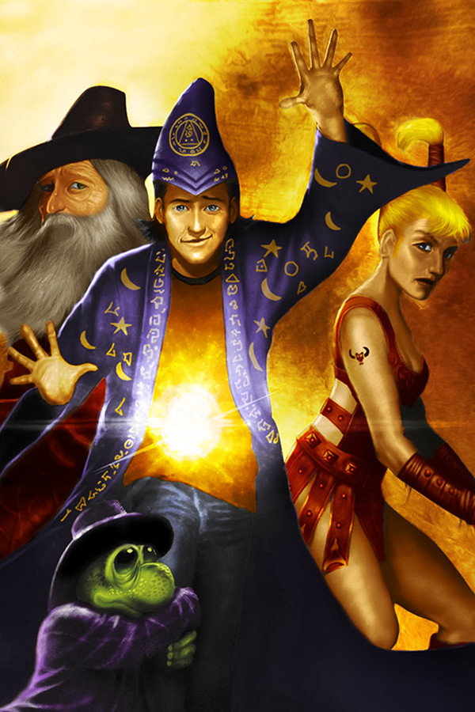
English original · rejected-no-titleNot available yet
HebrewPrince of Persia 2: The Shadow and the Flame
הנסיך הפרסי 2: הצל והלהבה
JSON #2 · pair-scan-review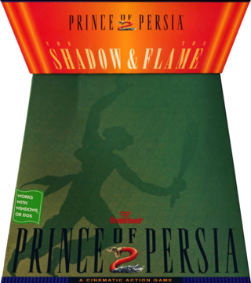
English original · needs_visual_review Hebrew · verified-hebrew-scan
Hebrew · verified-hebrew-scanThe Dig
התגלית
JSON #3 · pending English original · needs_visual_review
English original · needs_visual_reviewNot available yet
HebrewThe Secret of Monkey Island
הסוד של אי הקופים
JSON #4 · pending English original · needs_visual_review
English original · needs_visual_reviewNot available yet
HebrewMonkey Island 2: LeChuck's Revenge
אי הקופים 2: נקמתו של לה-צ'אק
JSON #5 · pair-scan-review English original · needs_visual_review
English original · needs_visual_review Hebrew · verified-hebrew-scan
Hebrew · verified-hebrew-scanThe Curse of Monkey Island
הקללה של אי הקופים
JSON #6 · pending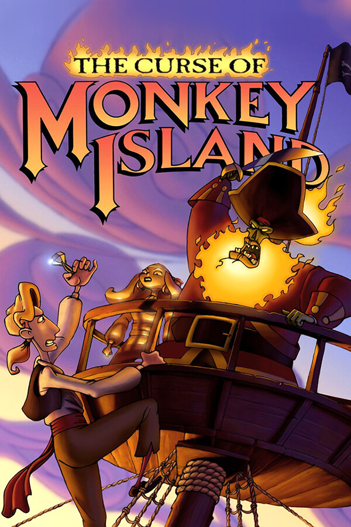
English original · needs_visual_reviewNot available yet
HebrewIndiana Jones® and the Fate of Atlantis
אינדיאנה ג'ונס בעקבות סודה של אטלנטיס
JSON #7 · pair-scan-review English original · needs_visual_review
English original · needs_visual_review Hebrew · verified-hebrew-scan
Hebrew · verified-hebrew-scanIndiana Jones and the Last Crusade
אינדיאנה ג'ונס ומסע הצלב האחרון
JSON #8 · pending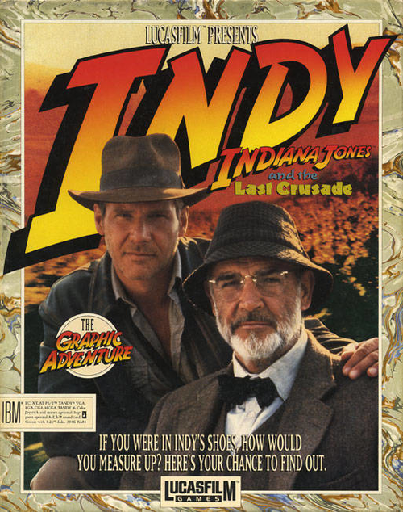
English original · needs_visual_reviewNot available yet
HebrewManiac Mansion
אחוזת המטורפים
JSON #9 · pending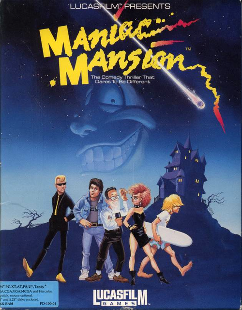
English original · needs_visual_reviewNot available yet
HebrewFull Throttle (not the Remastered version)
הילוך שיא
JSON #10 · pending English original · needs_visual_review
English original · needs_visual_reviewNot available yet
HebrewGrim Fandango (not the Remastered version)
גרים פנדנגו
JSON #11 · pending English original · needs_visual_review
English original · needs_visual_reviewNot available yet
HebrewSam & Max Hit the Road
סם ומקס מתגלגלים בדרכים
JSON #12 · pair-scan-reviewEnglish original · needs_visual_review Hebrew · verified-hebrew-scan
Hebrew · verified-hebrew-scan Zak McKracken and the Alien Mindbenders
זכי מקראקן ומבלבלי השכל מהחלל
JSON #13 · pending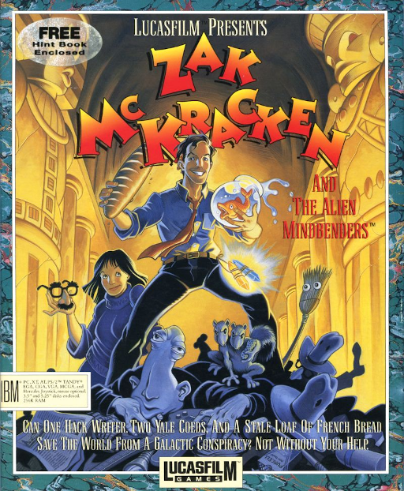
English original · needs_visual_reviewNot available yet
HebrewLoom (FM-Towns)
האורגים
JSON #14 · pending English original · needs_visual_review
English original · needs_visual_reviewNot available yet
HebrewThe Colonel's Bequest
עזבונו של הקולונל
JSON #15 · pending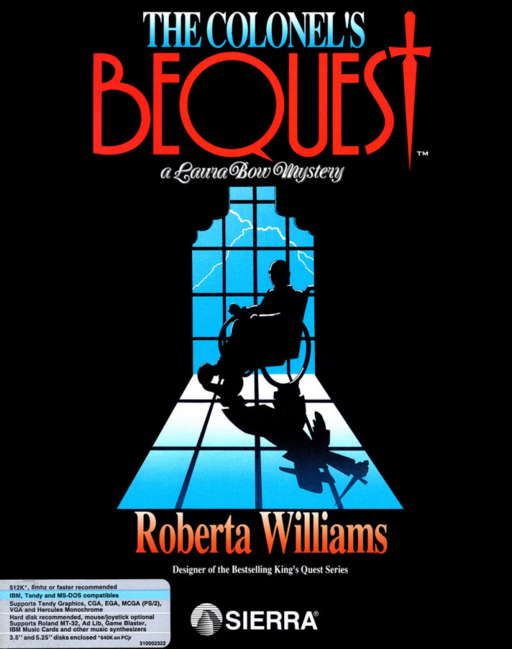
English original · needs_visual_reviewNot available yet
HebrewGabriel Knight: Sins of the Fathers (Not the Ann. edition)
גבריאל נייט 1: עוון אבות
JSON #20 · pair-scan-review English original · needs_visual_review
English original · needs_visual_review Hebrew · verified-hebrew-scan
Hebrew · verified-hebrew-scanThe Beast Within: A Gabriel Knight® Mystery
גבריאל נייט 2: החיה שבתוכנו
JSON #21 · pair-scan-review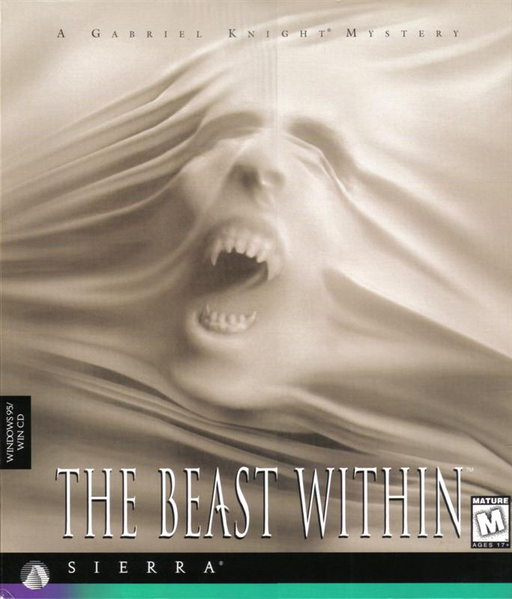
English original · needs_visual_reviewHebrew · verified-hebrew-scanInherit the Earth
יירשו ארץ - המסע בעקבות העין
JSON #23 · pending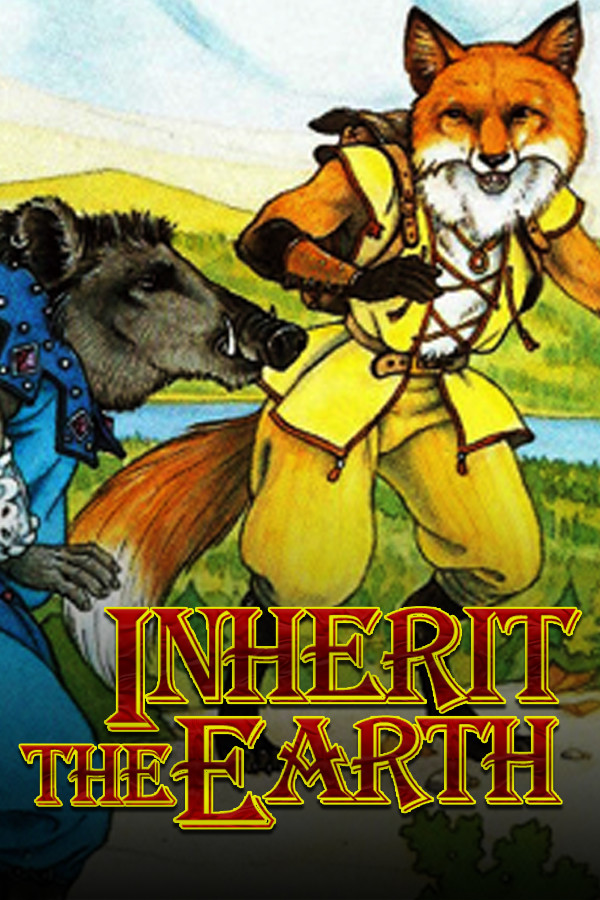
English original · needs_visual_reviewNot available yet
HebrewBroken Sword: The Shadow of the Templars
חרב שבורה: צל אבירי המקדש
JSON #24 · pair-composited-review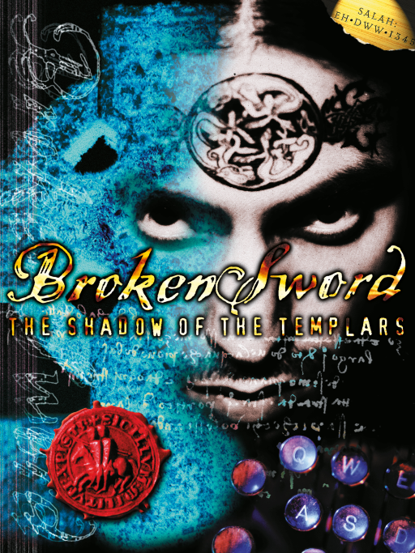
English original · needs_visual_review Hebrew · composited-needs-visual-review
Hebrew · composited-needs-visual-reviewBroken Sword II: The Smoking Mirror
חרב שבורה 2 - המראה המעשנת
JSON #25 · pair-composited-review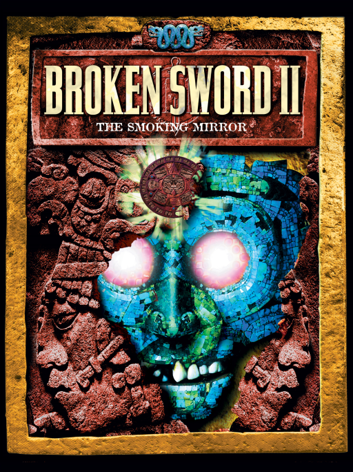
English original · needs_visual_reviewHebrew · composited-needs-visual-reviewBroken Sword 2.5: The Return of the Templars
חרב שבורה 2.5 - שובם של הטמפלרים
JSON #26 · pair-composited-review English original · needs_visual_review
English original · needs_visual_review Hebrew · composited-needs-visual-review
Hebrew · composited-needs-visual-reviewThe Legend of Kyrandia: Hand of Fate (Book Two)
דברי ימי קירנדיה 2: יד הגורל
JSON #28 · pending English original · needs_visual_review
English original · needs_visual_reviewNot available yet
HebrewThe Legend of Kyrandia - Book Three: Malcolm's Revenge
דברי ימי קירנדיה 3: נקמתו של מלקולם
JSON #29 · pending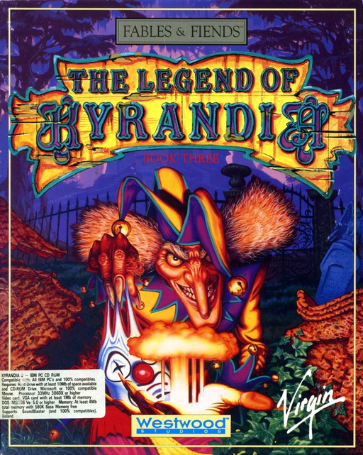
English original · needs_visual_reviewNot available yet
HebrewSam & Max Save the World
סם ומקס מצילים את העולם - פרק 1
JSON #30 · pending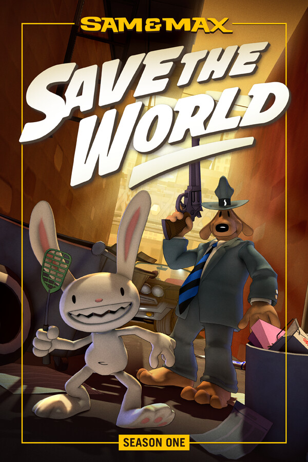
English original · needs_visual_reviewNot available yet
HebrewBEAUTIFUL DESOLATION
קסם בישימון
JSON #31 · pair-composited-review English original · needs_visual_review
English original · needs_visual_review Hebrew · composited-needs-visual-review
Hebrew · composited-needs-visual-reviewBlack Mirror II
מראה שחורה 2
JSON #32 · pair-composited-reviewEnglish original · needs_visual_review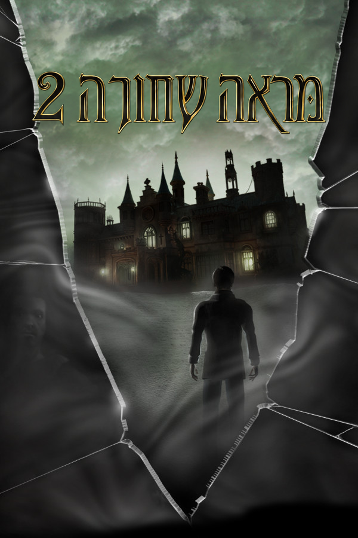
Hebrew · composited-needs-visual-review Black Mirror III
מראה שחורה 3
JSON #33 · pair-composited-reviewBlade Runner
בלייד ראנר
JSON #34 · pendingEnglish original · needs_visual_reviewNot available yet
Hebrew Atlantis 4: Evolution
אטלנטיס - גן עדן בלהבות
JSON #35 · pending English original · needs-visual-and-edition-review
English original · needs-visual-and-edition-reviewNot available yet
HebrewGhost Pirates of Vooju Island
פיראטי הרפאים מהאי ווג'ו
JSON #37 · pending English original · needs_visual_review
English original · needs_visual_reviewNot available yet
HebrewDear Esther: Landmark Edition
אסתר היקרה: מהדורת ציון הדרך
JSON #38 · pair-composited-reviewShe Sees Red - Interactive Movie
אדום בעיניה
JSON #39 · pending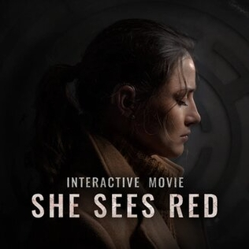
English original · needs-visual-and-edition-reviewNot available yet
HebrewThe 7th Guest 25th Anniversary Edition
האורח השביעי
JSON #40 · pair-composited-review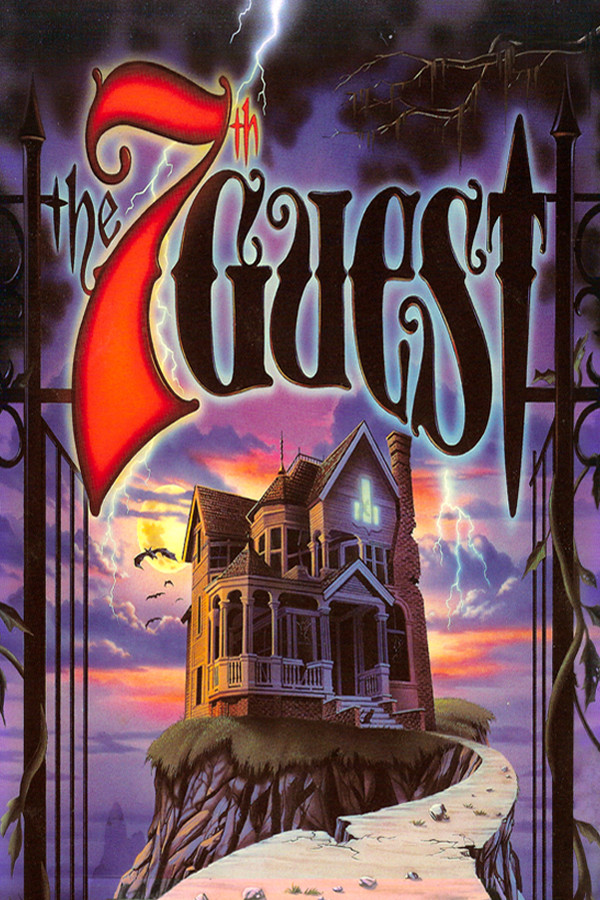
English original · needs_visual_review Hebrew · composited-needs-visual-review
Hebrew · composited-needs-visual-reviewCat and Ghostly Road
חתול בדרך רפאים
JSON #41 · pair-composited-review English original · needs_visual_review
English original · needs_visual_review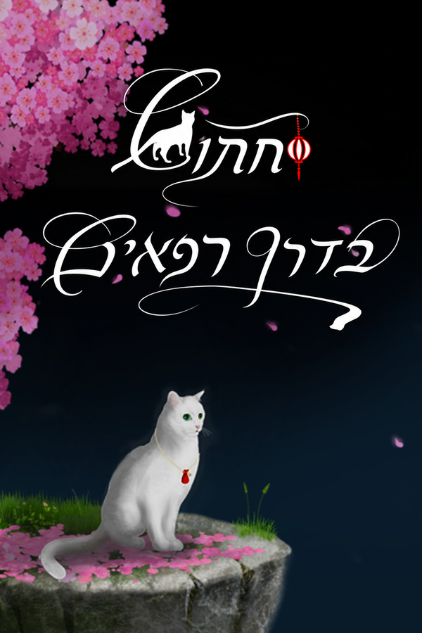
Hebrew · composited-needs-visual-reviewDark Nights with Poe and Munro
לילות אפלים עם פו ומונרו
JSON #42 · pair-composited-review English original · needs_visual_reviewHebrew · composited-needs-visual-review
English original · needs_visual_reviewHebrew · composited-needs-visual-reviewReturn of the Tentacle - Prologue
חזרתו של הטנטקל
JSON #43 · pendingNot available yet
English originalNot available yet
HebrewMaid of Sker
בתולת סקר
JSON #44 · pair-composited-review English original · needs_visual_review
English original · needs_visual_review Hebrew · composited-needs-visual-review
Hebrew · composited-needs-visual-reviewLate Shift
משמרת מאוחרת
JSON #45 · pair-composited-reviewEnglish original · needs_visual_reviewHebrew · composited-needs-visual-review The Bunker
הבונקר
JSON #46 · pair-composited-reviewEnglish original · needs_visual_review Hebrew · composited-needs-visual-review
Hebrew · composited-needs-visual-review The Shapeshifting Detective
הבלש משנה הצורה
JSON #47 · pair-composited-review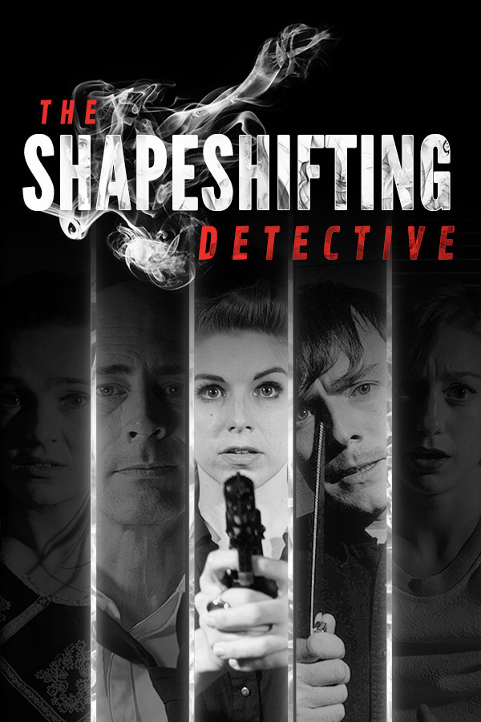
English original · needs_visual_review Hebrew · composited-needs-visual-review
Hebrew · composited-needs-visual-reviewThe Complex
מתח במתחם
JSON #48 · pair-composited-reviewEnglish original · needs_visual_review Hebrew · composited-needs-visual-review
Hebrew · composited-needs-visual-review Portal
פורטל
JSON #49 · pair-composited-review English original · needs_visual_review
English original · needs_visual_review Hebrew · composited-needs-visual-review
Hebrew · composited-needs-visual-reviewPortal With RTX
פורטל עם RTX
JSON #50 · pair-composited-reviewEnglish original · needs_visual_review Hebrew · composited-needs-visual-review
Hebrew · composited-needs-visual-review Neighbours from Hell
שכנים מהגיהנום
JSON #51 · pending English original · needs-visual-and-edition-review
English original · needs-visual-and-edition-reviewNot available yet
HebrewPrince of Persia
הנסיך הפרסי
JSON #52 · pair-scan-review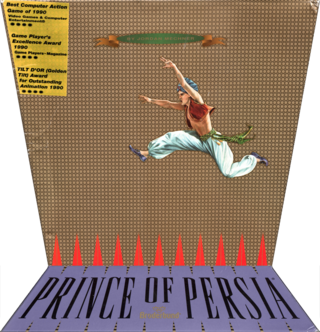
English original · needs_visual_review Hebrew · verified-hebrew-scan
Hebrew · verified-hebrew-scanEver Forward
לנצח בתי
JSON #53 · pair-composited-review English original · needs_visual_review
English original · needs_visual_review Hebrew · composited-needs-visual-review
Hebrew · composited-needs-visual-reviewMy Memory of Us
זכור אזכרנו
JSON #54 · pair-composited-review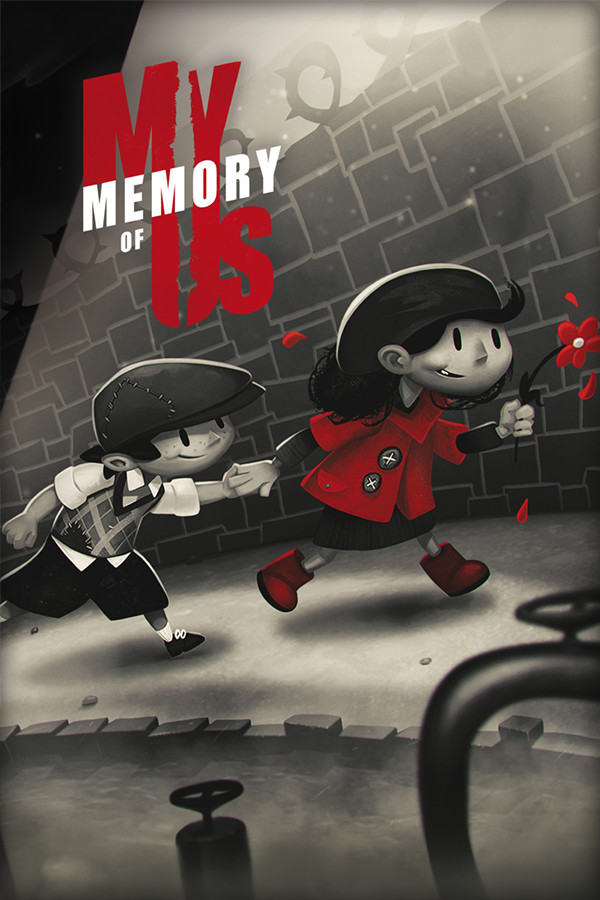
English original · needs_visual_review Hebrew · composited-needs-visual-review
Hebrew · composited-needs-visual-reviewMystic Pillars: A Story-Based Puzzle Game
עמודי הפלא
JSON #55 · pendingNot available yet
English originalNot available yet
HebrewA Fold Apart
רגשות מקופלים
JSON #56 · pair-composited-reviewEnglish original · needs_visual_reviewHebrew · composited-needs-visual-review Hidden Saga: Xamadeon Stone
הסאגה הסודית ואבן השמדיאון
JSON #57 · pair-composited-review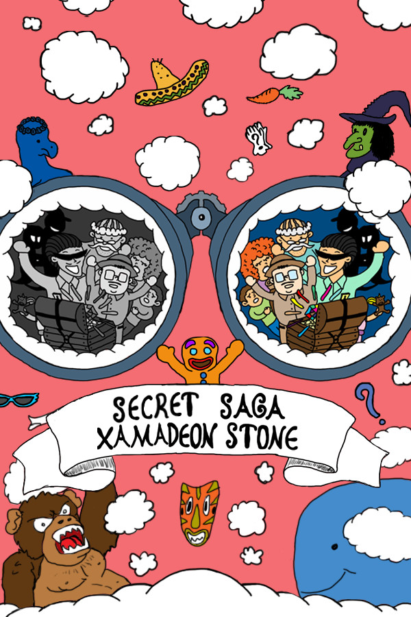
English original · needs_visual_review Hebrew · composited-needs-visual-review
Hebrew · composited-needs-visual-reviewThe Henry Stickmin Collection
הנרי לי דקיק
JSON #58 · pair-composited-reviewEnglish original · needs_visual_review Hebrew · composited-needs-visual-review
Hebrew · composited-needs-visual-review Syberia
סיבריה (לא Remastered)
JSON #59 · pair-composited-review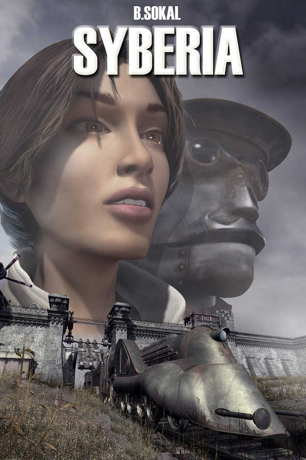
English original · needs_visual_review Hebrew · composited-needs-visual-review
Hebrew · composited-needs-visual-reviewSyberia II
סיבריה 2 (לא Remastered)
JSON #60 · pair-composited-review English original · needs_visual_review
English original · needs_visual_review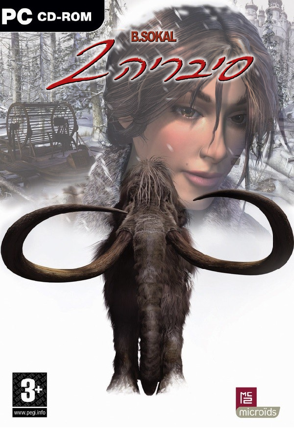
Hebrew · composited-needs-visual-reviewTender Loving Care
טיפול רגשי
JSON #61 · pair-composited-review English original · needs_visual_reviewHebrew · composited-needs-visual-review
English original · needs_visual_reviewHebrew · composited-needs-visual-reviewSanitarium
סניטריום
JSON #62 · pair-scan-reviewThe Prophecy
נער הנבואה
JSON #63 · pair-scan-review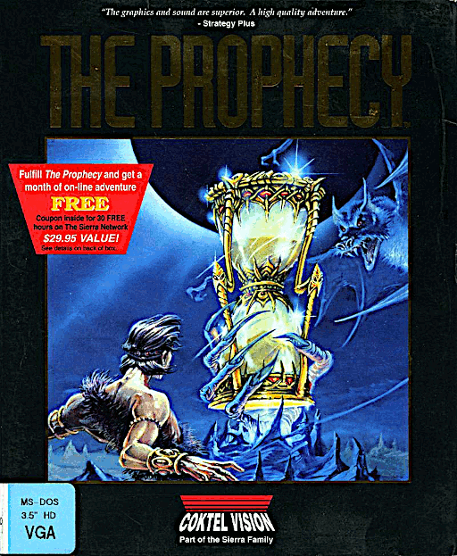
English original · needs_visual_review Hebrew · verified-hebrew-scan
Hebrew · verified-hebrew-scanPhantasmagoria
פנטזמגוריה
JSON #64 · pair-scan-review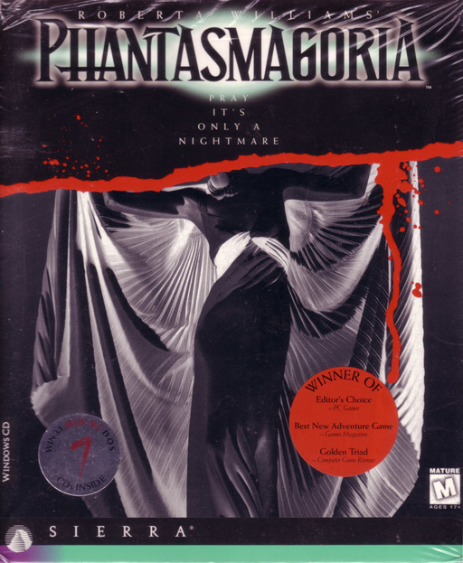
English original · needs_visual_review Hebrew · verified-hebrew-scan
Hebrew · verified-hebrew-scanBoundless Osher
אושר בלי גבולות
JSON #65 · pendingNot available yet
English originalNot available yet
HebrewAtlantis II : Beyond Atlantis
אטלנטיס 2 : מעבר לאטלנטיס
JSON #66 · pending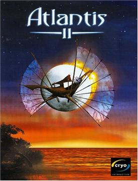
English original · needs-visual-and-edition-reviewNot available yet
HebrewAtlantis III : The New World
אטלנטיס 3 : העולם החדש
JSON #67 · pending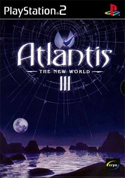
English original · needs-visual-and-edition-reviewNot available yet
HebrewEcoQuest: The Search for Cetus
מסע אקולוגי: החיפוש אחר סיטוס
JSON #70 · pair-scan-reviewPhantasmagoria 2: A Puzzle of Flesh
פנטזמגוריה 2
JSON #71 · pair-scan-review English original · needs_visual_review
English original · needs_visual_review Hebrew · verified-hebrew-scan
Hebrew · verified-hebrew-scanA Vampyre Story
מעשה בערפדית
JSON #73 · pair-composited-review English original · needs_visual_review
English original · needs_visual_review Hebrew · composited-needs-visual-review
Hebrew · composited-needs-visual-reviewAlpha Polaris : A Horror Adventure Game
אלפא פולאריס
JSON #74 · pendingEnglish original · needs-visual-and-edition-reviewNot available yet
Hebrew Face Noir
פני האפלה
JSON #78 · pendingEnglish original · needs-visual-and-edition-reviewNot available yet
Hebrew Rayman 2: The Great Escape
ריימן 2: הבריחה הגדולה
JSON #79 · pending English original · needs-visual-and-edition-review
English original · needs-visual-and-edition-reviewNot available yet
HebrewJ.U.L.I.A. Among the Stars
ג'וליה: בין הכוכבים:
JSON #80 · pending English original · needs_visual_review
English original · needs_visual_reviewNot available yet
HebrewContradiction: Spot The Liar:
Hebrew title missing from input
JSON #81 · pending English original · needs_visual_review
English original · needs_visual_reviewNot available yet
HebrewSerena
סרינה
JSON #82 · pair-composited-review English original · needs_visual_review
English original · needs_visual_review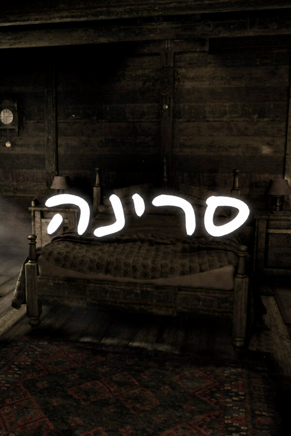
Hebrew · composited-needs-visual-reviewGone Home
לשוב הביתה
JSON #83 · pair-composited-reviewZork: Grand Inquisitor
זורק: האינקוויזיטור הגדול
JSON #84 · pending English original · needs_visual_review
English original · needs_visual_reviewNot available yet
HebrewZork Nemesis: The Forbidden Land
זורק נמסיס: הארצות האסורות
JSON #85 · pending English original · needs_visual_review
English original · needs_visual_reviewNot available yet
HebrewHelga deep in trouble
הלגה עמוק בצרות
JSON #86 · pendingEnglish original · needs_visual_reviewNot available yet
Hebrew Space Madness
טירוף בחלל
JSON #88 · pending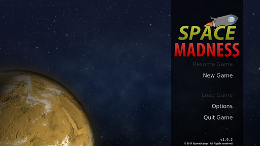
English original · needs_visual_reviewNot available yet
HebrewEven More Incredible Machine
המכונה המופלאה
JSON #89 · pending English original · needs_visual_review
English original · needs_visual_reviewNot available yet
HebrewBlack Mirror (2017)
מראה שחורה (2017)
JSON #91 · pair-composited-reviewDracula 4+5
דרקולה 4+5
JSON #92 · pendingNot available yet
English originalNot available yet
HebrewSalammbô: Battle for Carthage
סלמבו - הקרב על קרתגו
JSON #93 · pair-composited-reviewEnglish original · needs_visual_review Hebrew · composited-needs-visual-review
Hebrew · composited-needs-visual-review Dirty Split
גירושין מכוערים
JSON #94 · pending English original · needs_visual_review
English original · needs_visual_reviewNot available yet
HebrewThe Hardy Boys: The Hidden Theft
בני הרדי בתעלומת השוד הכמוס
JSON #95 · pending English original · needs-visual-and-edition-review
English original · needs-visual-and-edition-reviewNot available yet
HebrewGhost in the Sheet
הרוח בסדין
JSON #96 · pendingEnglish original · needs_visual_reviewNot available yet
Hebrew The Shivah
השבעה
JSON #97 · pair-composited-review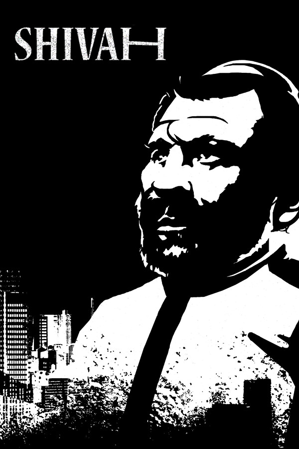
English original · needs_visual_reviewHebrew · composited-needs-visual-reviewReversion
Hebrew title missing from input
JSON #98 · pendingNot available yet
English originalNot available yet
HebrewLoretta
לורטה
JSON #100 · pending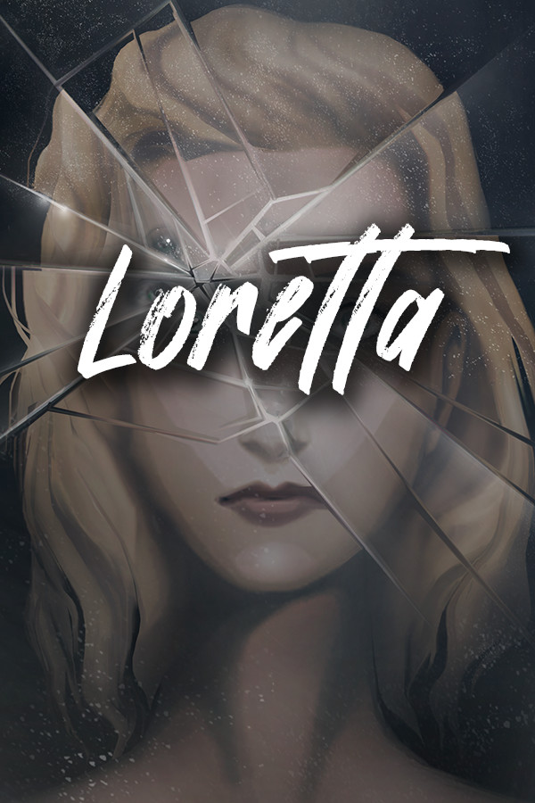
English original · needs_visual_reviewNot available yet
HebrewChronicles of Mystery - The Tree of Life
עולמות של מסתורין: עץ החיים
JSON #101 · pair-composited-review English original · needs_visual_reviewHebrew · composited-needs-visual-review
English original · needs_visual_reviewHebrew · composited-needs-visual-reviewArt of Murder - Hunt for the Puppeteer
אמנות הרצח: המצוד אחר הבובנאי
JSON #102 · pair-composited-review English original · needs_visual_reviewHebrew · composited-needs-visual-review
English original · needs_visual_reviewHebrew · composited-needs-visual-reviewLost Chronicles of Zerzura
האגדות האבודות של זרזורה
JSON #103 · pendingNot available yet
English originalNot available yet
HebrewStill Life
טבע דומם
JSON #104 · pair-composited-reviewTreasure Island
אי המטמון
JSON #105 · pendingNot available yet
English originalNot available yet
HebrewThe Abbey - Director's cut
רצח במנזר
JSON #106 · pendingNot available yet
English originalNot available yet
HebrewMata Hari
מאטה הארי
JSON #108 · pendingEnglish original · needs-visual-and-edition-reviewNot available yet
Hebrew Chronicles of Mystery - The Scorpio Ritual
עולמות של מסתורין: פולחן העקרב
JSON #109 · pending English original · needs-visual-and-edition-review
English original · needs-visual-and-edition-reviewNot available yet
HebrewAlternativa
אלטרנטיבה
JSON #110 · pair-composited-review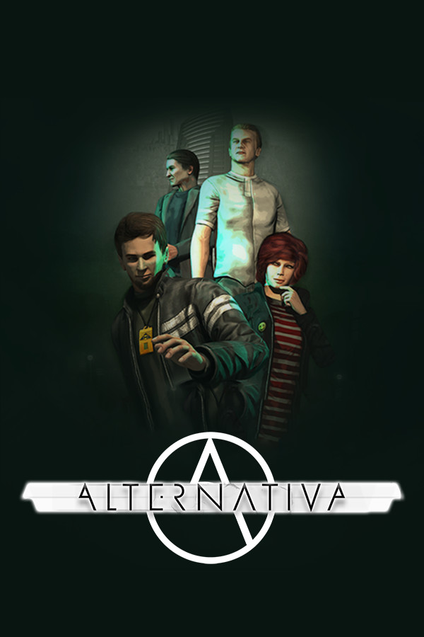
English original · needs_visual_review Hebrew · composited-needs-visual-review
Hebrew · composited-needs-visual-reviewThe Secrets of Atlantis: The Sacred Legacy
מסתורי אטלנטיס: המורשת המקודשת
JSON #111 · pendingEnglish original · needs-visual-and-edition-reviewNot available yet
Hebrew keepsake
מזכרת
JSON #113 · pending English original · needs-visual-and-edition-review
English original · needs-visual-and-edition-reviewNot available yet
HebrewArt of Murder - FBI Confidential
אמנות הרצח - סודות הבולשת
JSON #114 · pair-composited-reviewEnglish original · needs_visual_reviewHebrew · composited-needs-visual-review Secret Files: Tunguska
תיקים סודיים: טונגוסקה
JSON #115 · pair-composited-review English original · needs_visual_review
English original · needs_visual_review Hebrew · composited-needs-visual-review
Hebrew · composited-needs-visual-reviewLeisure Suit Larry in the Land of the Lounge Lizards
לארי לבוש ליציאה בארץ חרדוני הלילה
JSON #116 · pendingEnglish original · needs_visual_reviewNot available yet
Hebrew Gabriel Knight 3: Blood of the Sacred, Blood of the Damned
גבריאל נייט 3: דם קדושים, דם ארורים
JSON #117 · pending English original · needs-visual-and-edition-review
English original · needs-visual-and-edition-reviewNot available yet
HebrewSecret Files 2: Puritas Cordis
תיקים סודיים 2: פוריטס קורדיס
JSON #118 · pair-composited-reviewEnglish original · needs_visual_reviewHebrew · composited-needs-visual-review Call of Cthulu: Shadow of the Comet
קריאתו של קת'ולהו: צל השביט
JSON #119 · pending English original · needs_visual_review
English original · needs_visual_reviewNot available yet
HebrewAnd Then There Were None
ולא נותר אף אחד
JSON #120 · pendingEnglish original · needs-visual-and-edition-reviewNot available yet
Hebrew King's Quest
מסע המלך
JSON #122 · pending English original · needs_visual_review
English original · needs_visual_reviewNot available yet
HebrewCleopatra: A Queen's Destiny
קליאופטרה: גורלה של מלכה
JSON #123 · pending English original · needs-visual-and-edition-review
English original · needs-visual-and-edition-reviewNot available yet
HebrewLost Horizon
אופק אבוד
JSON #124 · pair-composited-reviewEnglish original · needs_visual_reviewHebrew · composited-needs-visual-review Emerald City Confidential
סודות עיר האזמרגד
JSON #125 · pendingEnglish original · needs-visual-and-edition-reviewNot available yet
Hebrew Destination: Treasure Island
יעד: אי המטמון
JSON #126 · pending English original · needs-visual-and-edition-review
English original · needs-visual-and-edition-reviewNot available yet
HebrewKing's Quest 2
מסע המלך 2
JSON #127 · pending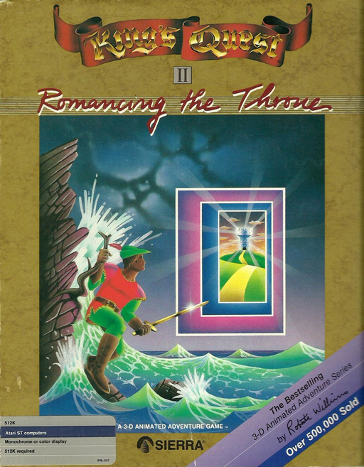
English original · needs_visual_reviewNot available yet
HebrewGray Matter
חומר אפור
JSON #128 · pending English original · needs-visual-and-edition-review
English original · needs-visual-and-edition-reviewNot available yet
HebrewAnkh Anniversary Edition
ענח'
JSON #129 · pair-composited-reviewBroken Sword 4 - the Angel of Death
חרב שבורה 4: מלאך המוות
JSON #131 · pair-composited-review English original · needs_visual_reviewHebrew · composited-needs-visual-review
English original · needs_visual_reviewHebrew · composited-needs-visual-reviewKing's Quest III: To Heir is Human
מסע המלך 3
JSON #132 · pending English original · needs_visual_review
English original · needs_visual_reviewNot available yet
HebrewPokémon Emerald
פוקימון ברקת
JSON #133 · pendingEnglish original · needs-visual-and-edition-reviewNot available yet
Hebrew Dreamfall: The Longest Journey
דרימפול: המסע הארוך ביותר
JSON #134 · pair-composited-review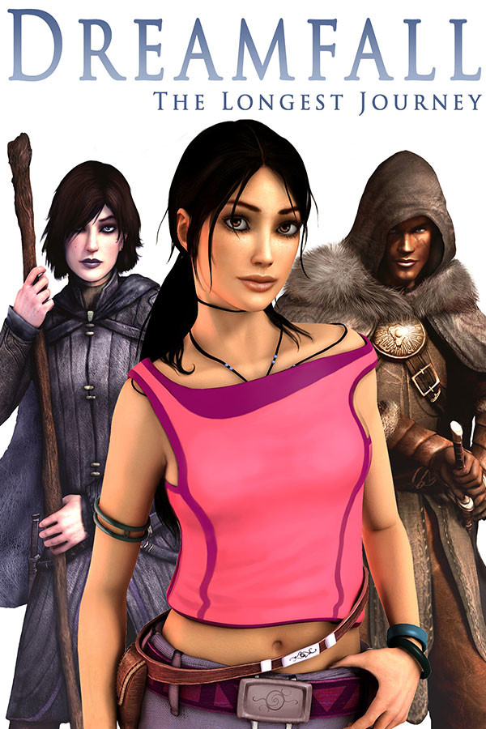
English original · needs_visual_reviewHebrew · composited-needs-visual-reviewKing's Quest: Mask of Eternity
מסע המלך: מסכת הנצח
JSON #135 · pair-scan-review English original · needs_visual_reviewHebrew · verified-hebrew-scan
English original · needs_visual_reviewHebrew · verified-hebrew-scanBroken Sword 3: The Sleeping Dragon
חרב שבורה 3: הדרקון הישן
JSON #137 · pair-composited-reviewEnglish original · needs_visual_review Hebrew · composited-needs-visual-review
Hebrew · composited-needs-visual-review King's Quest IV: The Perils of Rosella
מסע המלך 4: תלאותיה של רוזלה
JSON #138 · pending English original · needs_visual_review
English original · needs_visual_reviewNot available yet
HebrewJolly Rover
ג'ולי רובר
JSON #139 · pair-composited-review English original · needs_visual_review
English original · needs_visual_review Hebrew · composited-needs-visual-review
Hebrew · composited-needs-visual-reviewAlter Ego
אלטר אגו
JSON #140 · pending English original · needs-visual-and-edition-review
English original · needs-visual-and-edition-reviewNot available yet
HebrewBlack Sails: The Ghost Ship
מפרשים שחורים
JSON #141 · pair-composited-reviewEnglish original · needs_visual_reviewHebrew · composited-needs-visual-review Escape From Monkey Island
הבריחה מאי הקופים
JSON #142 · pending English original · needs_visual_review
English original · needs_visual_reviewNot available yet
HebrewSecret Files 3
תיקים סודיים 3
JSON #143 · pair-composited-reviewEnglish original · needs_visual_review Hebrew · composited-needs-visual-review
Hebrew · composited-needs-visual-review King's Quest V: Absence Makes the Heart go Yonder
מסע המלך 5: רחוק מהעין, רחוק מהלב
JSON #144 · pendingEnglish original · needs_visual_reviewNot available yet
Hebrew Next Life
עולם הבא
JSON #145 · pendingEnglish original · needs-visual-and-edition-reviewNot available yet
Hebrew Art of Murder - Cards of Destiny
אמנות הרצח 3: קלפי הגורל
JSON #146 · pair-composited-review English original · needs_visual_reviewHebrew · composited-needs-visual-review
English original · needs_visual_reviewHebrew · composited-needs-visual-reviewNikopol: Secrets of the Immortals
ניקופול: סודות בני האלמוות
JSON #147 · pair-composited-review English original · needs_visual_review
English original · needs_visual_review Hebrew · composited-needs-visual-review
Hebrew · composited-needs-visual-reviewTales of Monkey Island
מעשיות אי הקופים
JSON #148 · pair-composited-reviewEnglish original · needs_visual_reviewHebrew · composited-needs-visual-review There Is No Game - Wrong Dimension
אין שום משחק - מימד שגוי
JSON #149 · pending English original · needs-visual-and-edition-review
English original · needs-visual-and-edition-reviewNot available yet
HebrewDracula 3: The Path of the Dragon
דרקולה 3: נתיב הדרקון
JSON #150 · pendingEnglish original · needs_visual_reviewNot available yet
Hebrew King's Quest VI - Heir Today, Gone Tomorrow
מסע המלך 6: היום יורש, מחר פורש
JSON #151 · pendingEnglish original · needs_visual_reviewNot available yet
Hebrew Duke Grabowski: Mighty Swashbuckler
דוכס גרבובסקי: הרפתקן אדיר!
JSON #152 · pendingNot available yet
English originalNot available yet
HebrewMemento Mori
דע את יום מותך
JSON #153 · pair-composited-review English original · needs_visual_reviewHebrew · composited-needs-visual-review
English original · needs_visual_reviewHebrew · composited-needs-visual-reviewGalador - The Prince and the Coward
גלאדור: הנסיך והפחדן
JSON #154 · pendingEnglish original · needs_visual_reviewNot available yet
Hebrew Agatha Christie: Murder on the Orient Express (2006)
רצח באוריינט אקספרס (2006)
JSON #155 · pendingEnglish original · needs-visual-and-edition-reviewNot available yet
Hebrew The Blackwell Legacy
מורשת בלאקוול
JSON #156 · pair-composited-review English original · needs_visual_review
English original · needs_visual_review Hebrew · composited-needs-visual-review
Hebrew · composited-needs-visual-reviewThe Cat Lady
אשת החתולים
JSON #157 · pair-composited-review English original · needs_visual_review
English original · needs_visual_review Hebrew · composited-needs-visual-review
Hebrew · composited-needs-visual-reviewKing's Quest VII: The Princesless Bride
מסע המלך 7: נסיכה לא כלה
JSON #158 · pair-scan-review English original · needs_visual_review
English original · needs_visual_review Hebrew · verified-hebrew-scan
Hebrew · verified-hebrew-scanBlackwell Unbound
בלאקוול: קשר אבוד
JSON #159 · pair-composited-review English original · needs_visual_review
English original · needs_visual_review Hebrew · composited-needs-visual-review
Hebrew · composited-needs-visual-reviewBlackwell Convergence
בלאקוול: התכנסות
JSON #161 · pair-composited-review English original · needs_visual_reviewHebrew · composited-needs-visual-review
English original · needs_visual_reviewHebrew · composited-needs-visual-reviewSecret Files: Sam Peters
תיקים סודיים: סם פיטרס
JSON #162 · pair-composited-review English original · needs_visual_reviewHebrew · composited-needs-visual-review
English original · needs_visual_reviewHebrew · composited-needs-visual-reviewKing's Quest 1 (SCI)
מסע המלך 1 (SCI)
JSON #163 · pending English original · needs_visual_review
English original · needs_visual_reviewNot available yet
HebrewGemini Rue
קללת תאומים
JSON #164 · pair-composited-review English original · needs_visual_review
English original · needs_visual_review Hebrew · composited-needs-visual-review
Hebrew · composited-needs-visual-reviewAgatha Christie: Evil Under the Sun
רעה תחת השמש
JSON #165 · pendingEnglish original · needs-visual-and-edition-reviewNot available yet
Hebrew Dune
חולית
JSON #166 · pendingEnglish original · needs_visual_reviewNot available yet
Hebrew Kaptain Brawe: A Brawe New World
קפטן ברייב: עולם חדש ואמיץ
JSON #167 · pair-composited-review English original · needs_visual_reviewHebrew · composited-needs-visual-review
English original · needs_visual_reviewHebrew · composited-needs-visual-reviewLost Horizon 2
אופק אבוד 2
JSON #168 · pair-composited-review English original · needs_visual_review
English original · needs_visual_review Hebrew · composited-needs-visual-review
Hebrew · composited-needs-visual-reviewTouche: The Adventures of the Fifth Musketeer
טושה: הרפתקת המוסקטר החמישי
JSON #169 · pendingEnglish original · needs_visual_reviewNot available yet
Hebrew Broken Sword 5 - The Serpent's Curse
חרב שבורה 5: קללת הנחש
JSON #170 · pair-composited-review English original · needs_visual_reviewHebrew · composited-needs-visual-review
English original · needs_visual_reviewHebrew · composited-needs-visual-reviewApprentice 1 Deluxe
שולייה 1 דלוקס
JSON #171 · pendingNot available yet
English originalNot available yet
HebrewBlackwell Epiphany
בלאקוול ההתגלות
JSON #172 · pair-composited-reviewEnglish original · needs_visual_review Hebrew · composited-needs-visual-review
Hebrew · composited-needs-visual-review Warcraft Adventures - Lord of the Clans
הרפתקאות וורקראפט - אדון השבטים
JSON #173 · pendingEnglish original · needs-visual-and-edition-reviewNot available yet
Hebrew Black Mirror I
מראה שחורה
JSON #174 · pair-composited-review English original · needs_visual_reviewHebrew · composited-needs-visual-review
English original · needs_visual_reviewHebrew · composited-needs-visual-review